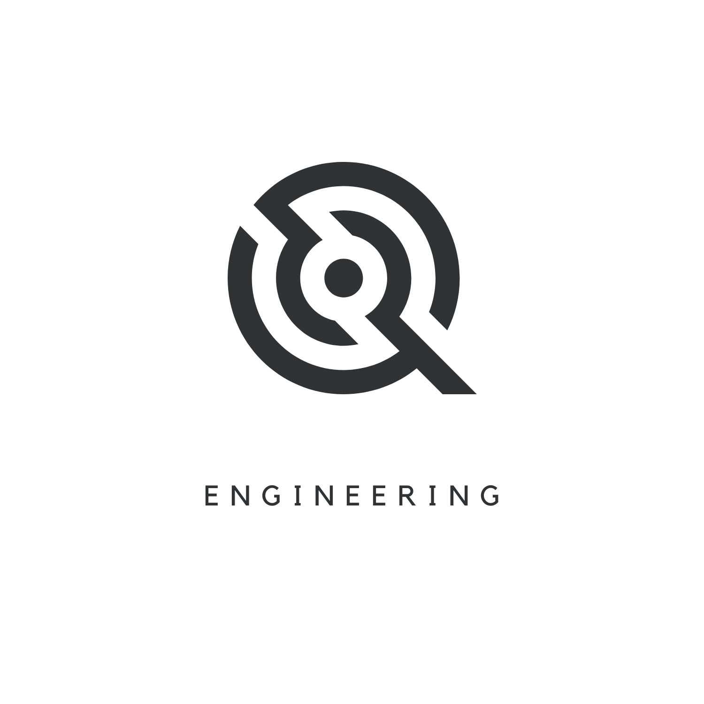
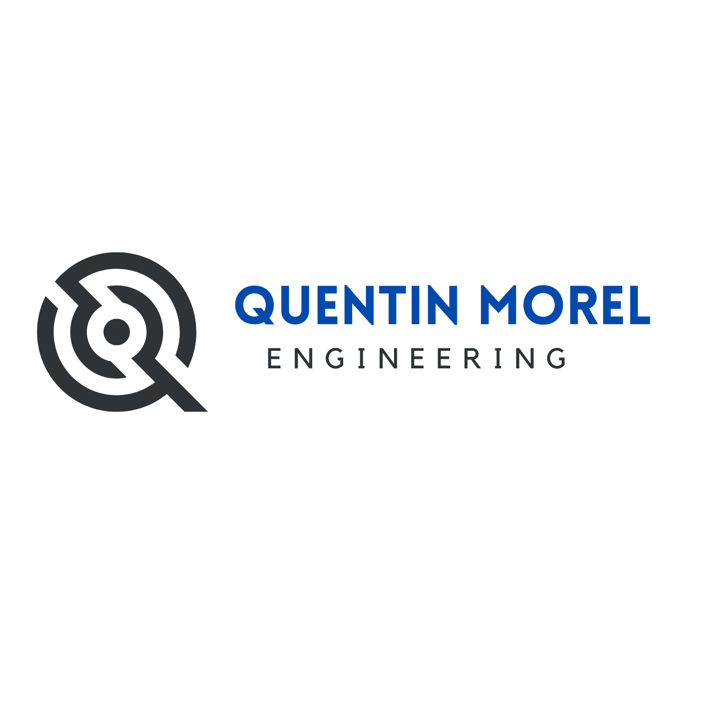

⌁
Applications & outils métier
Applications web, portails internes, CRM et gestion de projet sur mesure.
Web appCRMPortail

Conseil · Ingénierie · Outils numériques
QME conçoit des applications, systèmes de pilotage et processus sur mesure. Une approche d’ingénieur : comprendre, structurer, construire, transmettre.
Expertises
Des solutions proportionnées aux usages, lisibles par les équipes et conçues pour durer.
Applications web, portails internes, CRM et gestion de projet sur mesure.
Tableaux de bord, datavisualisation, analyse et reporting décisionnel.
Structuration des flux, conseil, pilotage et coordination technique.
Diagnostic, plan d’amélioration, formation et autonomie.
Références sélectionnées
Trois missions documentées. Les futurs visuels pourront être ajoutés dans les cadres prévus.
Base structurée, documents opérationnels, dashboards et tests utilisateurs.
Contacts, catégories, suivis et communications dans un hub unique.
Un système partagé pour suivre les sessions et l’avancement des clients.
Également : Simpladocs · visualisations SVG · outils de reporting
Approche
Chaque étape produit un livrable concret. Les choix restent lisibles.

Gestion de projets complexes, coordination multi-acteurs et conception centrée usages.
Premier échange
Décrivez le contexte en quelques lignes. QME proposera la prochaine étape utile.
qm.morel@gmail.com